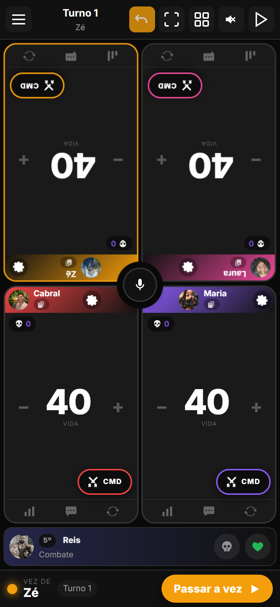
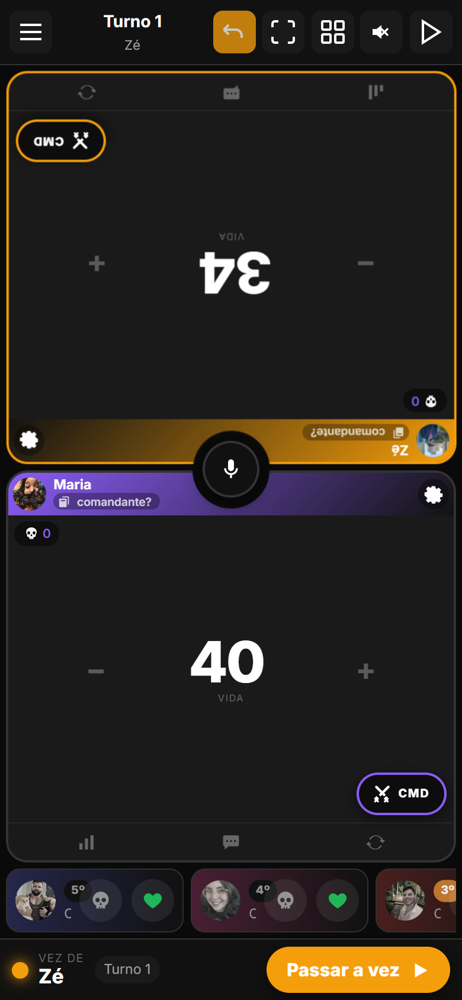
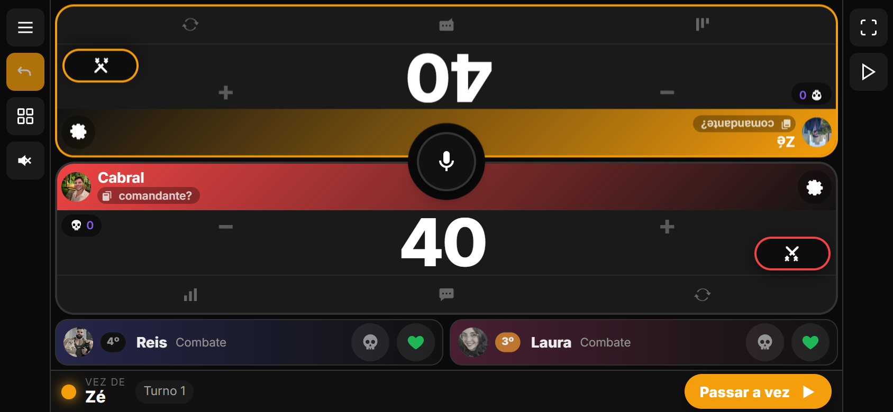
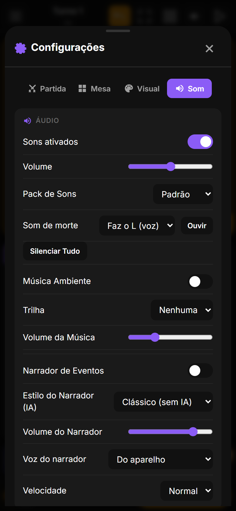
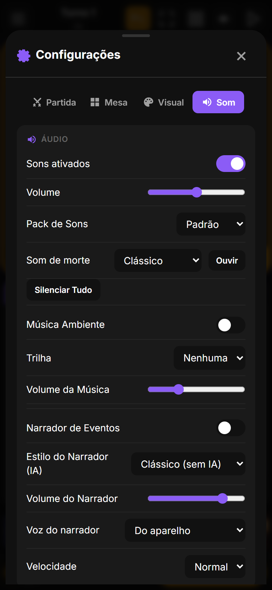
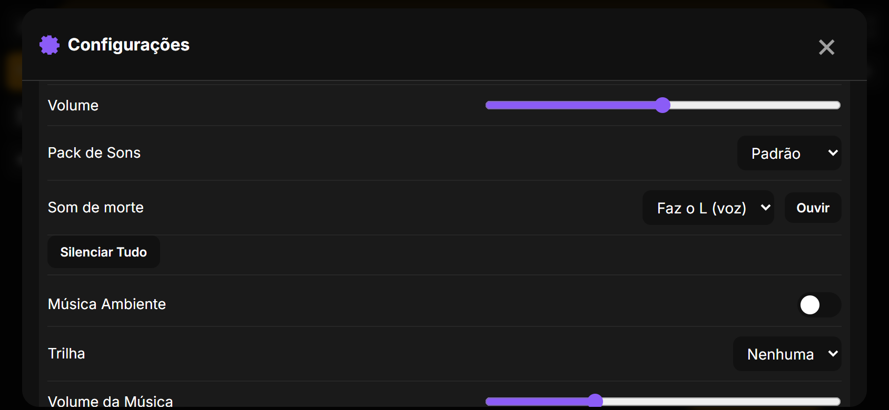

Versão de som. Quando alguém é eliminado, em vez do "fon fon fon fooooom" sintetizado, a mesa agora ouve o áudio do amigo mandando "faz o L". Dá pra voltar ao clássico em Configurações › Som. E, de quebra, um bug antigo que o áudio novo escancarou foi corrigido: o som de morte repetia a cada toque de vida depois da primeira eliminação.
O áudio veio do WhatsApp (3 s, voz) e virou o som padrão de morte. Foi convertido pra mp3 como os outros sons do app, cortando 1,1 s de silêncio puro que havia antes da voz: fica com 2,1 s e começa a falar na hora em que o jogador cai. O volume já era parecido com o dos sons atuais (média -15 dB contra -10 a -17 dB dos outros), então não precisou de ajuste. Toca no navegador e no APK, e várias mortes seguidas tocam uma por cima da outra sem cortar.



É a voz de uma pessoa específica. Numa mesa com gente de fora pode não fazer sentido, então a escolha fica em Configurações › Som › Som de morte: "Faz o L (voz)" ou "Clássico" (o fon fon fon de sempre). O botão Ouvir toca o que está escolhido, pra não precisar matar ninguém pra testar. A preferência fica salva no aparelho. "Silenciar tudo" e o modo silencioso continuam valendo pra ele também.



Ao testar o áudio novo, o QA contou 43 "faz o L" numa partida com duas mortes. A causa estava lá desde a versão que trouxe os sons personalizados (fevereiro de 2026): a cada atualização da mesa sem vencedor, o app zerava a lista de "mortes já anunciadas" e, no toque de vida seguinte, anunciava de novo todo mundo que já tinha caído. Com o fon fon fon de 1 s isso passava como um "eco"; com uma voz de 2 s ficava impossível de ignorar. Agora a lista só é zerada quando a partida é reiniciada ou uma nova começa. O mesmo conserto vale pro narrador e pra animação de morte por comandante, que também repetiam.
| Onde | O que mudou |
|---|---|
| Áudio | faz-o-l.mp3 na raiz (44,1 kHz mono, 2,09 s, -15,3 dB médio, pico -0,8 dB), copiado pro Android pelo build-bundle.mjs como os outros mp3. Convertido do .ogg (opus) do WhatsApp com o ffmpeg do pacote imageio_ffmpeg (o do Playwright é um build mínimo, sem opus nem mp3). |
| audio.ts | soundFiles.death = 'faz-o-l.mp3'; failedFiles marca arquivo que deu erro no carregamento e playSoundFile devolve false pra cair no sintetizado; playSynthSound separado de playDefaultSound; com deathSound === 'classic' o death vai direto no sintetizado. Precedência personalizado › servidor › padrão intacta. |
| Configurações | settings.deathSound: 'voice' | 'classic' (padrão voice, migração de estado antigo); select #death-sound + botão #death-sound-test na aba Som. |
| ui.ts | hideShareButtons() não zera mais eliminatedPlayersShown (era chamado em todo renderGame sem vencedor); o zerar foi pros três pontos de nova partida/reset/voltar pra home. |
| Versão | 2.5.3, code 28, nos dois lugares (build.gradle.kts e updater.ts). APK LifeCounter-v2.5.3.apk na raiz. |
| Testes | QA novo (qa14) com 26 verificações: instrumenta o play() dos elementos de áudio (arquivo, evento playing, duração, fim, erro, volume) e a nota grave exclusiva do fon fon fon. Cobre três mortes seguidas em pé, duas deitado, toques depois da morte, Ouvir, Clássico (inclusive morte real e reload), som pessoal vencendo o padrão e o fallback com o mp3 bloqueado. Suítes anteriores (qa13, qa11, qa10) sem regressão; zero erros de JS. |
Como atualizar. No Android, o app avisa ao abrir e instala com um toque (ou Configurações › Atualização). No navegador basta recarregar.